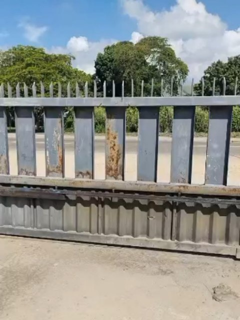

Automatización de portones
Motores, controles, accesorios y operadores eléctricos para distintos tipos de acceso.
EspecialidadIngeniería práctica · ejecución precisa
Automatización de portones y trabajos integrales para transformar, resolver y construir con criterio técnico.

Capacidades
Desde el acceso automatizado hasta la intervención completa de un espacio: soluciones técnicas organizadas alrededor de cada necesidad.
Motores, controles, accesorios y operadores eléctricos para distintos tipos de acceso.
EspecialidadTrabajo en metal aplicado a accesos y soluciones constructivas.
Ejecución de trabajos civiles según el alcance de cada proyecto.
Intervenciones para renovar y adaptar espacios existentes.
Soluciones eléctricas vinculadas a obra y automatización.
Terminaciones y trabajos complementarios para una ejecución integral.
Selección visual
Una mirada al trabajo y las soluciones compartidas por CONSTRUTECH en su perfil oficial.
Cómo comenzamos
Un proceso simple para entender el proyecto antes de definir la solución.
Conocer el espacio y observar las condiciones del trabajo.
Revisar alternativas y orientar la solución según la necesidad.
Definir el alcance y preparar una cotización para el proyecto.
¿Tienes un proyecto?
Describe tu idea en esta simulación y continúa la conversación desde el perfil oficial de Instagram.